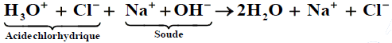

Chapitre II : Acide fort et Base forte
I - L’acide chlorhydrique
1. Rappels :
L’acide chlorhydrique est un liquide vendu dans le commerce pour décaper les métaux et nettoyer les carrelages des traces de plâtre ou de ciment. Il doit être manipulé avec précaution car il est dangereux.
2. Nature de la solution obtenue : Etude qualitative :
L’acide chlorhydrique est une solution aqueuse contenant des ions hydroniums et des ions chlorures. Il est obtenu par réaction entre le chlorure d’hydrogène et l’eau.
Expérience :
Cette réaction s’interprète bien à partir de la structure des molécules HCl et H2O, toutes deux sont polaires.
On peut considérer que le chlorure d’hydrogène libère un proton selon le schéma : HCl → H+ + Cl-
Ce proton est capté par une molécule d’eau selon le schéma :
H2O + H+ → H3O+
⊃ Identification des ions de la solution :
- La solution obtenue colore en rouge l’hélianthine initialement jaune : Elle est donc acide (H3O+)
- La solution obtenue donne un précipité blanc en présence d’ions Argent (Ag+) : Elle contient donc les ions chlorure (Cl-).
3. Etude quantitative de la solution d’acide chlorhydrique :
Mesurons à 25°C, le pH d’une solution d’acide chlorhydrique à 10-2 mol/l à l’aide d’un pH-mètre. Nous lisons pH = 2,0.
Ce résultat nous permet de conclure que la réaction de l’acide chlorhydrique avec l’eau est une réaction totale: l’acide chlorhydrique est un acide fort.
4. Généralisation :
- Un acide est dit fort s’il réagit totalement avec l’eau. L’équation de la réaction s’écrit :
AH + H2O → H3O+ + A-
Quelle que soit la molarité de la solution, on a toujours [AH] = 0
Exemple :
L'acide nitrique : HNO3 + H2O → H3O+ + NHO3- (ion nitrate)
L'acide bromhydrique : HBr + H2O → H3O+ + Br- (ion brome)
L'acide iodhydrique : HI + H2O → H3O+ + I- (ioniode)
L'acidesulfurique : H2SO4 + 2H2O → 2H3O+ + SO42- (ion sulfate)
- Une solution aqueuse d’acide fort est une solution dans laquelle les seuls acides présents sont l’ion hydronium H3O+ et l’eau.
- Si la solution est suffisamment acide (pH ≺ 6) on peut considérer que les ions hydroniums fournis par l’eau sont négligeables devant ceux produits par l’acide. pH = -logCa .
II - Base forte
1. L’hydroxyde de sodium (soude).
a. Rappel :
L’hydroxyde de sodium est un solide blanc qui se présente le plus souvent sous forme de pastilles ou de paillettes. C’est un cristal ionique constitué par un empilement ordonné d’ions sodium Na+ et d’ions hydroxyde (OH-). Il est utilisé pour déboucher les tuyaux d’évacuation. C’est un produit dangereux pour la peau et les yeux.
b. Préparation d’une solution d’hydroxyde de sodium :
L’hydroxyde de sodium est très soluble dans l’eau : à 25°C un litre d’eau peut en dissoudre 27 moles, soit 1080g. Lors de la dissolution, l’édifice cristallin est détruit, les ions Na+ et OH- étant hydraté et dispersé.
Expérience :
Le bilan de la dissolution est donné par l’équation

Identification des ions Na+ et OH-
- Un fil de platine préalablement trempé dans une solution d’hydroxyde de sodium colore en jaune la flamme du bec bunsen : la solution contient des ions Na+.
- Par addition de quelques gouttes d’hydroxyde de sodium, à une solution de sulfate de cuivre (II), on fait apparaître un précipité d’hydroxyde de cuivre (II) Cu(OH)2 : la solution ajoutée contient des ions OH-.
c. Etude quantitative de la solution :
Préparons une solution d’hydroxyde de sodium à 10-3 mol/l et mesurons son pH avec un pH-mètre à 25°C, nous lisons : pH = 11.
Ce résultat nous permet de conclure que la réaction de l’hydroxyde de sodium avec l’eau est presque totale, nous admettons qu’elle l’est complètement.
2. Généralisation :
- Une base est dite forte si elle réagit totalement dans l’eau.
Exemple :
hydroxydedepotassium : KOH → K+ + OH-
Hydroxydedecalcium : Ca(OH)2 → Ca2+ + 2OH-
- Une solution aqueuse de base forte est une solution dans laquelle les seules bases fortes présentes sont l’ion hydroxyde (OH-) et l’eau.
- Si la solution est suffisamment basique (pH ≻ 8), on peut considérer que les ions hydroxydes fournis par l’eau sont négligeables devant ceux produits par la base et écrire : pH = 14 + logCb
III - Dosage Acide fort/base forte
1. Dosage de l’acide chlorhydrique par la soude :
a. principe : Doser une solution, c’est déterminer la concentration de l’acide ou la base qu’elle contient.
- Equation de la réaction :
Lorsqu’on verse une solution de soude dans une solution d’acide chlorhydrique, on constate une grande élévation de température. Cette réaction est exothermique. L’équation de la réaction précédente s’écrit :

Seuls les ions OH- réagissent avec les ions H3O+ pour former de l’eau. En effet, les ions Na+ ne pourraient réagir qu’avec les ions OH- pour former l’espèce NaOH, or NaOH et est totalement ionisé. De même, les ions Cl- sont sans action sur les ions H3O+.
L’équation peut donc s’écrire plus simplement : H3O+ + OH- → 2H2O
C’est l’équation-bilan de toute réaction entre un acide fort et une base forte en solution dans l’eau.
b. Point d’équivalence :
Il y a équivalence lorsque les réactifs ont été mélangés dans les proportions Stoechiométriques de la réaction de dosage. L’équivalence est donc obtenue lorsque la quantité d’ions hydroxyde OH- ajoutés est égale à la quantité d’ions hydronium H3O+ initialement présent dans le bécher.
A l’équivalence : n(OH-)ajouté à l'équivalence = n(H3O+)initialement présents
Soit respectivement CA et VA, les concentration et volume de la solution d’acide chlorhydrique initialement introduite dans le bécher, et CB et VBE, les concentration et volume de la solution d’hydroxyde de sodium introduite à l’équivalence. Nous pouvons écrire :
n(OH-)ajouté à l'équivalence = CB.VBE
n(H3O+)initialement présents = CA.VA
De ces égalités, nous déduisons la relation :
A l’équivalence : CA.VA = CB.VBE
c. Emploi d’indicateurs colorés :
Les indicateurs colorés sont des réactifs dont la couleur dépend du pH. Ils sont caractérisés par leur zone de virage. Un indicateur peut être utilisé pour repérer la fin d’un dosage si l’équivalence est atteinte dans les zones de virage.
+ Choix de l’indicateur coloré :
- Espèce chimique à l’équivalence : Na+, Cl-, H3O+, OH- et H2O
A l’équivalence la solution est neutre : son pH = 7 à 25°C. Comme la zone de virage du BBT est 6,0 à 7,6 nous constatons que le BBT est l’indicateur le plus indiqué.
Zone de virage des indicateurs colorés les plus courants.
2. Etude expérimentale :
a. Dosage colorimétrique :
- Manipulation :
- Verser 20ml de solution d’acide chlorhydrique à 1,00. 10-2 mol/l dans le bécher (volume mesuré précisément à la pipette jaugée). Ajouter l’indicateur coloré.
- S’assurer que le robinet de la burette est fermé. En utilisant un bécher, verser la soude à 1,00. 10-2 mol/l dans la burette en dépassant le zéro. Placer le bécher au dessous et faire couler un peu de solution pour mettre au zéro.
Fermer le robinet.
- Verser 1ml de soude. Agiter. Recommencer. 1ml avant d’atteindre le volume équivalent ralentir le versement jusqu’au gouttes à gouttes.
- Noter le volume de soude versé à l’équivalence.
VBE = ………
CA = ………
b. Dosage pH-mètrique : Courbe de dosage.
- Manipulation :
Recommencer exactement la même manipulation. Un pH-mètre, préalablement étalonné, permet de mesurer le pH de la solution après chaque ajout de solution de NaOH. Un agitateur magnétique assure l’homogénéisation du mélange. Après avoir noté le pH initial, ajoutons progressivement la solution d’hydroxyde de sodium et relevons la valeur du pH après chaque ajout.
- Volume de base versé : VB = 0 mélange pH =
- Verser un volume égal à (VBE - 1) ml. Volume de base versée VB =……, mélange : pH = ……
- Verser un volume égal à (VBE + 1) ml. Volume de base versée VB =……, mélange : pH = ……
- Verser un volume égal à (VBE + 5) ml. Volume de base versée VB =……, mélange : pH = ……
+ Tracée de la courbe : pH = f(VB)
Echelle : 1cm pour 1 unité de pH, 1cm pour 2ml ou (2cm3)

+ Détermination du point d’inflexion par la méthode des tangentes :
- Tracer une droite tangente à la courbe au milieu de la partie incurvée la plus haute.
- Tracer une droite parallèle à la 1ère et tangente à la courbe en un point de la partie incurvée la plus basse.
- Tracer deux segments quelconques joignant ces deux parallèles (de préférence éloignés l’un de l’autre).
- Marquer les milieux de ces segments. Tracer la droite passant par ces deux points.
- Cette droite coupe la courbe en un point E qui est le point d’inflexion. Le point d’inflexion de la courbe correspond au point d’équivalence acido-basique.
- principales caractéristiques du graphe pH = f(VB) :
La courbe pH = f(VB) présente trois parties distinctes :
- pour VB ≼ 16 ml (partie AB), la courbe est presque rectiligne et le pH varie peu lors de l’addition de la solution d’hydroxyde de sodium.
- pour VB ≈ 20 ml (partie BC), on observe un «saut de pH» et la courbe change de concavité.
- le pH varie ensuite faiblement (partie CD), la courbe tendant vers une asymptote horizontale.